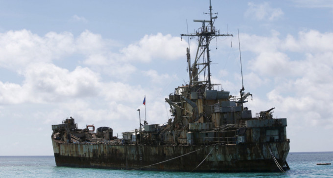
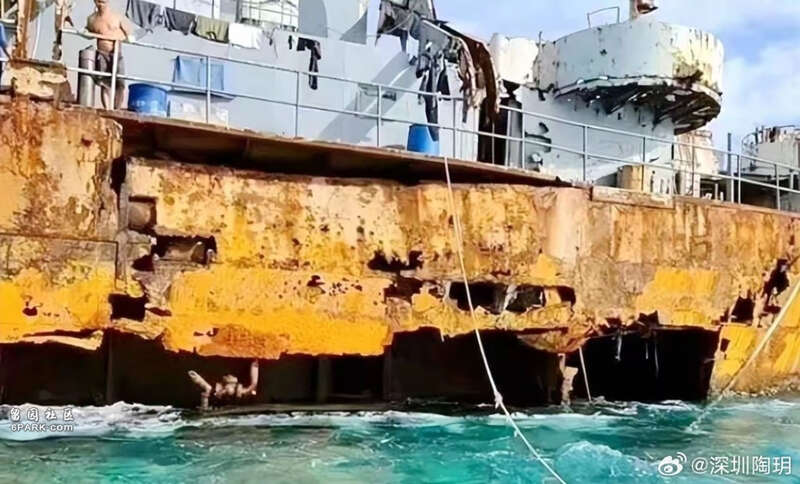
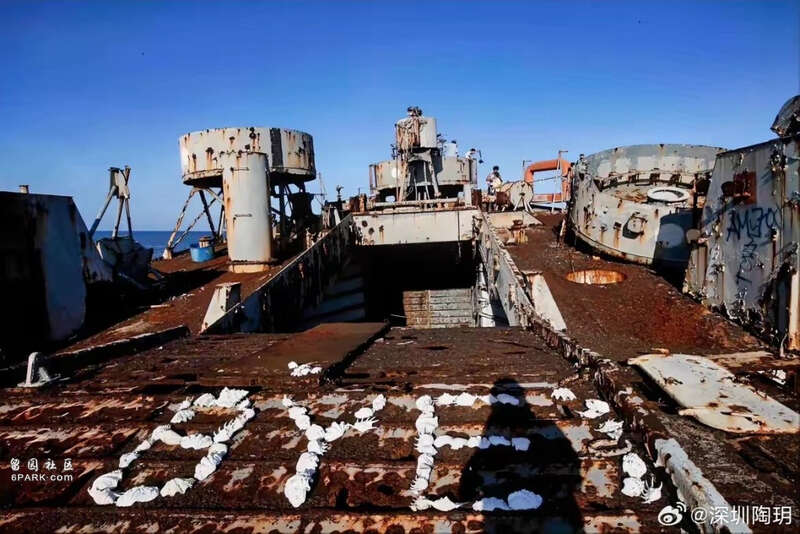
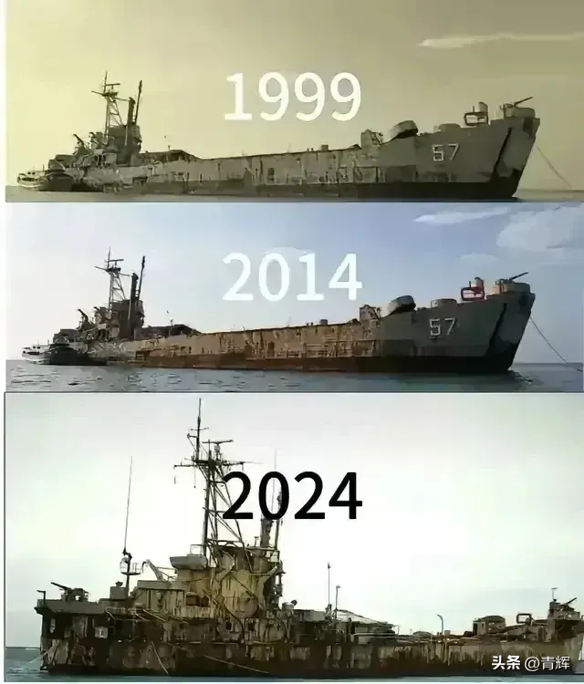
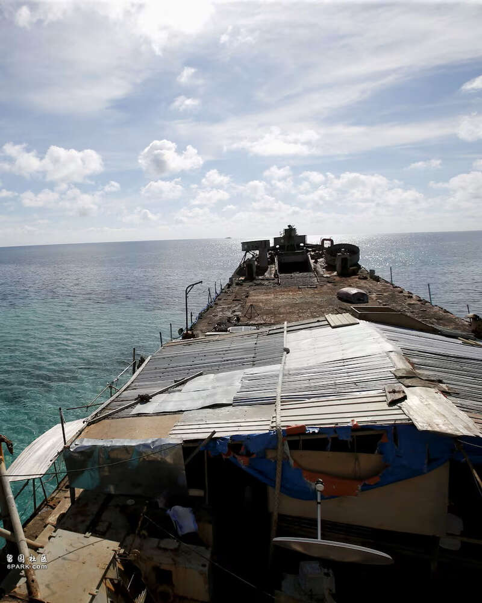
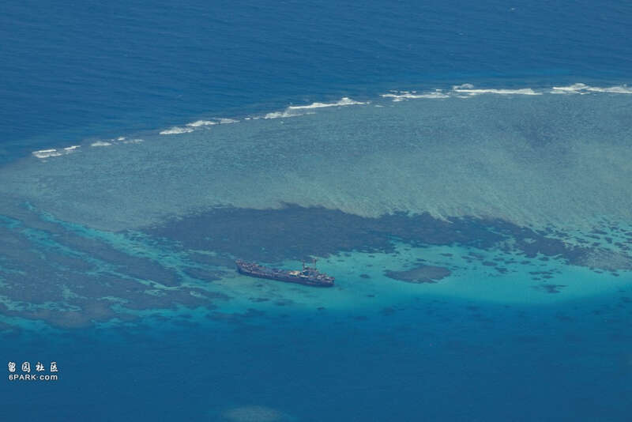
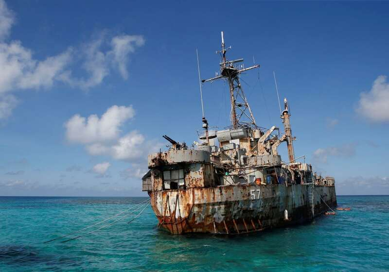
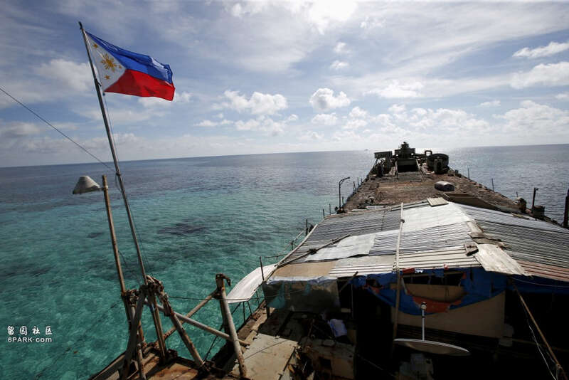
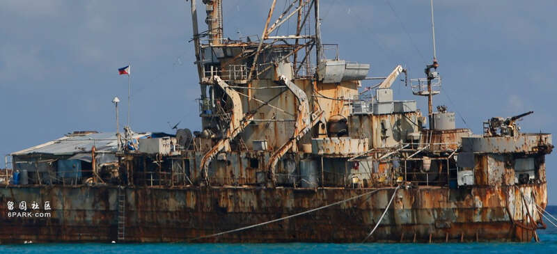

有报道指，菲律宾已完成对坦克登陆舰「马德雷山号」的加固作业。路透社
菲律宾在与中国有主权争议的南海仁爱礁暗沙上，刻意搁浅以宣示主权的坦克登陆舰「马德雷山号」，据报已完成加固，可供菲军继续「驻守」最少十年。
据彭博社报道，菲律宾军方坐滩南海仁爱礁的二战时期坦克登陆舰「马德雷山号」，近日已完成加固作业，使其能够继续存在大约10年。
菲律宾军方1999年将「马德雷山号」，刻意搁浅在仁爱暗沙上，并长期派兵驻守，以宣示主权。
有消息人士透露，这艘军舰早在2021年就已锈蚀不堪，当时评估舰体寿命只剩3至5年。另2名知情人士指出，尽管菲律宾先前也曾进行一些加固军舰的努力，但直到小马可斯就任菲国总统后，加固军舰的任务才明显加快。

二战时期坦克登陆舰「马德雷山号」残破如鬼船。微博

二战时期坦克登陆舰「马德雷山号」残破如鬼船。微博

二战时期坦克登陆舰「马德雷山号」残破如鬼船。微博

二战时期坦克登陆舰「马德雷山号」残破如鬼船。路透社

菲律宾刻意将登陆舰「马德雷山号」搁浅以宣示主权。路透社

有报道指，菲律宾已完成对坦克登陆舰「马德雷山号」的加固作业。路透社

有报道指，菲律宾已完成对坦克登陆舰「马德雷山号」的加固作业。路透社

有报道指，菲律宾已完成对坦克登陆舰「马德雷山号」的加固作业。路透社
3名知情人士指出，菲律宾对搁浅军舰的加固和改善，足以让这艘军舰在未来多年，继续成为菲国驻守这一争议海域的「坚固哨所」。
中方强调仁爱礁是中国南沙群岛的一部分，菲律宾派军舰在仁爱礁长期坐滩侵犯中国主权，频繁派遣海警船和民兵船阻挠菲国船只向驻舰官兵运送补给，双方因此频繁发生对峙冲突。双方最近达成临时性安排，中方同意允许菲方对该舰居住人员提供生活物资补给，但绝不接受运送大量建材上舰，试图建设固定设施和永久哨所。